1092E10 COUNTER-ROTATING SHAFT DRIVE TOOTHED BELT - R + R
- Path
- Procedures > 10 ENGINE UNIT > 1092 VARIOUS ENGINE COMPONENT CONTROLS > 1092E COUNTER-ROTATING SHAFT DRIVE > 1092E10 COUNTER-ROTATING SHAFT DRIVE TOOTHED BELT - R + R
- Kind
- repair procedure (removal / refitting; the operation number is the code)
- Applies to
- engines: 2.0 JTS; all production periods
- Interactive page
- https://sloeber94.github.io/elrnDB-aGt/en/#/125001197
Applies to: engines: 2.0 JTS; all production periods
 Removing
Removing
 Refitting
RefittingPosition the vehicle on the ramp
Proceed with removal
Op. 1016A40 IGNITION COIL COVER ON CYLINDER HEAD- R+R
1. Undo the bolts (1a), nut (1b) and remove the engine components single drive belt protection (1c).
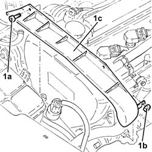
Applies to: engines: 2.0 JTS; all production periods
Proceed with removal
Op. 4450B04 RIGHT FRONT WHEEL R R
Proceed with removal
Proceed with removal
Op. 7055B66 ENGINE COMPARTMENT DUST SHIELD PROTECTION IN RIGHT FRONT WHEEL ARCH - R.R.
1. Use a spanner on the moving tensioner (1a) and remove the single drive belt (1b).
Op. 7055B54 UNDER-ENGINE GUARD - R R
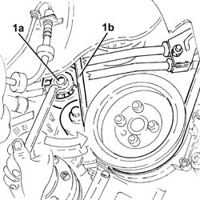
Applies to: engines: 2.0 JTS; all production periods
1. Undo bolts (1a) and remove protection (1b).
2. Fit the flywheel lock.
 | Name | Country |
|---|---|---|
2 | Counter-torque | 1.860.898.000 |
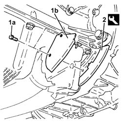
Applies to: engines: 2.0 JTS; all production periods
1. Undo the bolts (1a) and remove the crankshaft pulley (1b).
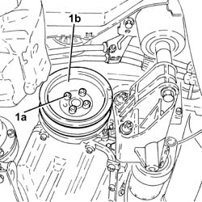
Applies to: engines: 2.0 JTS; all production periods
1. Remove the cap (1a), undo the bolt (1b) and remove the single belt fixed tensioner (1c).
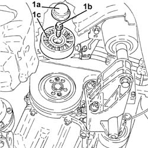
Applies to: engines: 2.0 JTS; all production periods
1. Undo the bolts (1a) and remove the upper protective timing cover (1b).
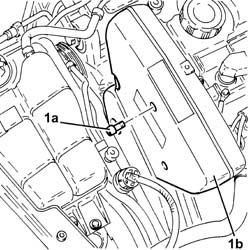
Applies to: engines: 2.0 JTS; all production periods
1. Undo the bolts (1a) and remove the right side protective timing cover (1b).
2. Undo the bolts (2a) and remove the left side protective timing cover (2b).
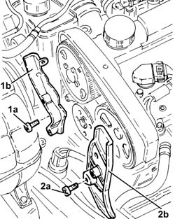
Applies to: engines: 2.0 JTS; all production periods
1. Undo the bolts (1a) and remove the lower protective timing cover (1b).
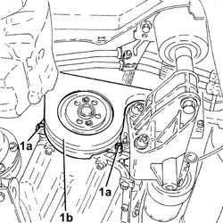
Applies to: engines: 2.0 JTS; all production periods
1. Loosen the nut for the counter-balance shaft toothed drive belt tensioner.
2. Remove the counter-balance shaft drive belt.
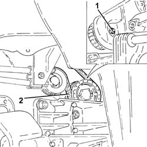
Applies to: engines: 2.0 JTS; all production periods
Refitting
Removing1. Rotate the counter-balance shafts so that the references (1a) on the pullies are aligned with the ribs (1b).
2. Temporarily fit the lower timing cover and the crankshaft pulley and check the alignment of the references.
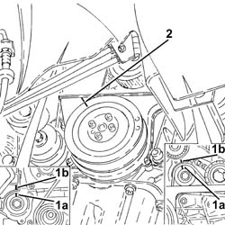
Applies to: engines: 2.0 JTS; all production periods
1. Fit the counter-balance shaft toothed drive belt.
2. Tension the counter-balance shaft drive belt using the tool (2a) so that the reference opening (2b) in the belt tensioner is at the centre of the rotation sector.
| Name | Country |
|---|---|---|
2a | Key | 1.822.154.000 |
3. Tighten the nut fixing the counter-balance shaft drive belt tensioner to the recommended torque.
 | Fastening | Component | Ø | Value (daNm) |
|---|---|---|---|---|
3 | Nut | COUNTER-ROTATING SHAFT BELT TENSIONER | M6 | (.Left. counter balance shaft front) cover side 0.8÷1.0 |
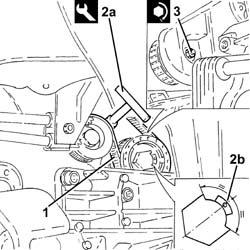
Applies to: engines: 2.0 JTS; all production periods
Fit the lower protective timing cover and secure using the bolts.
Place the protective timing side covers back in their housings and secure them using the bolts.
Fit the upper protective timing gear cover and fix it using the bolts.
1. Place the engine components single drive belt fixed tensioner (1a) back in its housing and fix it tightening the bolt (1b) to the recommended torque.
| Fastening | Component | Ø | Value (daNm) |
|---|---|---|---|---|
1b | Bolt | FIXED SINGLE SERVICE BELT TENSIONER | M8 | 2.2 ÷ 2.8 |
2. Place the engine components single drive belt fixed tensioner plug back in its seating.
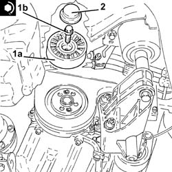
Applies to: engines: 2.0 JTS; all production periods
Fit the flywheel lock.
| Name | Country |
|---|---|---|
- | Counter-torque | 1.860.898.000 |
1. Place the crankshaft pulley (1a) back in its seating and secure it tightening the bolts (1b) to the specified torque.
| Fastening | Component | Ø | Value (daNm) |
|---|---|---|---|---|
1b | Bolt | CRANKSHAFT PULLEY | M8 | 2.3 ÷ 2.8 |
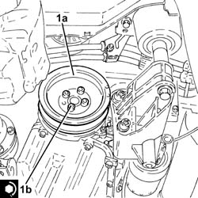
Applies to: engines: 2.0 JTS; all production periods
Remove the flywheel lock.
| Name | Country |
|---|---|---|
- | Counter-torque | 1.860.898.000 |
Place the protection back in its housing and secure it using the bolt.
Use a spanner in an anti-clockwise direction on the moving tensioner and fit the engine components single drive belt.
Proceed with refitting
Op. 7055B54 UNDER-ENGINE GUARD - R R.
Proceed with refitting
Op. 7055B66 ENGINE COMPARTMENT DUST SHIELD PROTECTION IN RIGHT FRONT WHEEL ARCH - R.R..
Proceed with refitting
Op. 4450B04 RIGHT FRONT WHEEL R R.
Refit the engine components single drive belt protection in its seating and secure with its nut and bolts.
Proceed with refitting
Op. 1016A40 IGNITION COIL COVER ON CYLINDER HEAD- R+R.
Remove the car from the ramps.
Topics linked from this page (4)
- 1016A40 IGNITION COIL COVER ON CYLINDER HEAD- R+R
- 4450B04 RIGHT FRONT WHEEL R R
- 7055B54 UNDER-ENGINE GUARD - R R
- 7055B66 ENGINE COMPARTMENT DUST SHIELD PROTECTION IN RIGHT FRONT WHEEL ARCH - R.R.
Topics that link to this page (5)
- 0010M20 120,000KM SERVICE COUPON, EMISSION CONTROL VERSIONS
- 1020E20 FRONT OIL SEAL OF ONE COUNTER-ROTATING SHAFT, L OR R - R + R
- 1092E16 COUNTER-ROTATING SHAFT DRIVE TOOTHED BELT TENSIONER - R + R
- 1092E22 COUNTER-ROTATING SHAFT DRIVE TOOTHED BELT DRIVE PULLEY - R + R
- 1092E26 COUNTER ROTATING SHAFT PULLEY - R + R